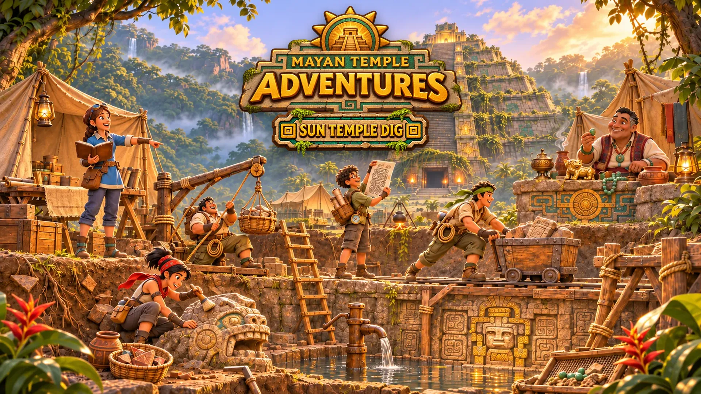

Gemeinsam
Das Museumszelt
Der seltenste Fund jedes Spielers aus der Saison wird im Gemeinschaftsbereich ausgestellt, mit seinem Namen daran.

Start / Spieltypen
Spieltyp · Tycoon
Bau Isabel Kaans verlassenes Lager Parzelle für Parzelle wieder auf und tauch in den Tempel, um seltene Funde zu bergen.
Dr. Isabel Kaans Grabungslager steht noch am Fuß der Pyramide, verlassen an dem Tag, an dem sie weiter hinaufging. Jeder Spieler übernimmt eine Parzelle und erweckt die Grabung wieder zum Leben.
Deine Crew gräbt Relikte aus, während du baust. Oxlahun kauft jeden Fund zum Freundschaftspreis. Kaya führt das Feldzelt und tauscht die Notizbuchseiten ihrer Mutter gegen die Relikte, um die sie bittet. Und der Tunnel in den Tempel steht offen: Kurze Tauchgänge in echte Räume des Aufstiegs bringen die seltensten Funde.
Kernkreisläufe
Über den Sortiertisch gehen und sichern, was deine Crew ausgegraben hat.
Ein Gebäude hinzufügen, Leute einstellen oder tiefer graben.
In den Pyramidentunnel gehen, allein oder mit Besuchern, in 3–5 Minuten einen Tempelraum schaffen und mit seltenen Relikten herauskommen.
Bis zur nächsten Tiefe graben: eine neue Art Relikt und ein neuer Tauchraum.
Die Saison abschließen, die Parzelle zurücksetzen und einen dauerhaften Bonus behalten, jede Saison in der Langen Zählung datiert, wie Isabel es getan hätte.
Die Grabung
Jede Schicht passt zu einem Teil des Tempels, so zeigt die Grabung ganz nebenbei, was der Aufstieg bereithält.
| Schicht | Funde | Öffnet Tauchgänge in |
|---|---|---|
| 1 · Oberboden | Tonscherben, Obsidiansplitter | Wurzelkeller |
| 2 · Überfluteter Graben | Jadeperlen, wassergetränkte Schnitzereien | Versunkene Galerie, Schleusenhalle |
| 3 · Behauener Stein | Glyphenabriebe, steinerne Köpfe | Blasrohrschrein, Plattengewölbe |
| 4 · Versiegelte Galerie | Goldene Idole, Fallenmechanismen, Splitter von Schlüsselkugeln | Sägegalerie, Pfeilkolonnade, Einstürzende Treppe |
Gemeinsam
Der seltenste Fund jedes Spielers aus der Saison wird im Gemeinschaftsbereich ausgestellt, mit seinem Namen daran.
Gemeinsam
Durch jede Parzelle spazieren und beim Tauchgang eines Nachbarn mitmachen, um die Funde mit Bonus für beide zu teilen.
Wenn es Nacht wird
Ab und zu kommen Erweckte Wächter aus der Pyramide auf die Parzellen zu. Fackeln und Pfähle halten sie fern. Spieler bestehlen einander nie.